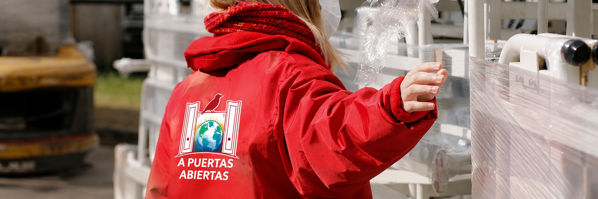

Somos una organización solidaria comprometida con brindar apoyo, acompañamiento y oportunidades a personas y familias que atraviesan situaciones de vulnerabilidad. Creemos que la solidaridad, el trabajo en equipo y la participación de la comunidad pueden generar cambios reales y construir un futuro más justo para todos.
Te invitamos a conocer nuestra historia, nuestros programas y las distintas formas en las que puedes colaborar para seguir abriendo puertas a quienes más lo necesitan.
A Puertas Abiertas nació en 2005 gracias a un grupo de voluntarios que decidió ayudar a familias afectadas por las crisis sociales, brindando alimentos, refugio y acompañamiento sin condiciones.
Conoce nuestra historia completa y valoresEn A Puertas Abiertas desarrollamos programas destinados al apoyo educativo, acompañamiento familiar, bienestar comunitario y campañas solidarias para ayudar a quienes más lo necesitan.
Conoce nuestros programas e iniciativas
Cada aporte cuenta. Gracias al compromiso de personas solidarias, A Puertas Abiertas puede continuar desarrollando programas de apoyo, asistencia y acompañamiento para quienes más lo necesitan.
| AL VOLUNTARIADO | CON TU DONACIÓN |